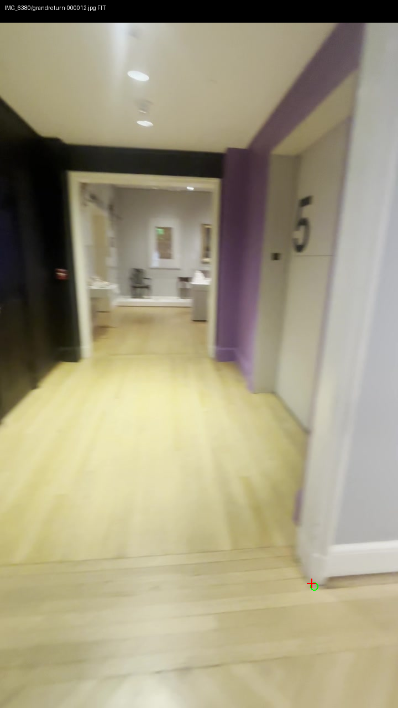
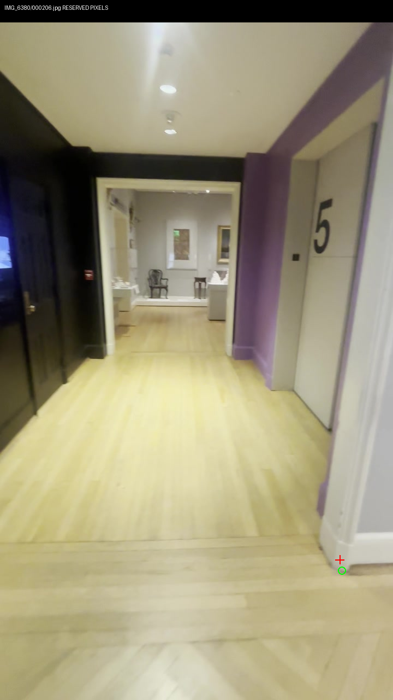
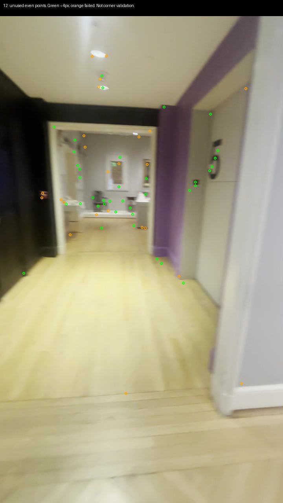
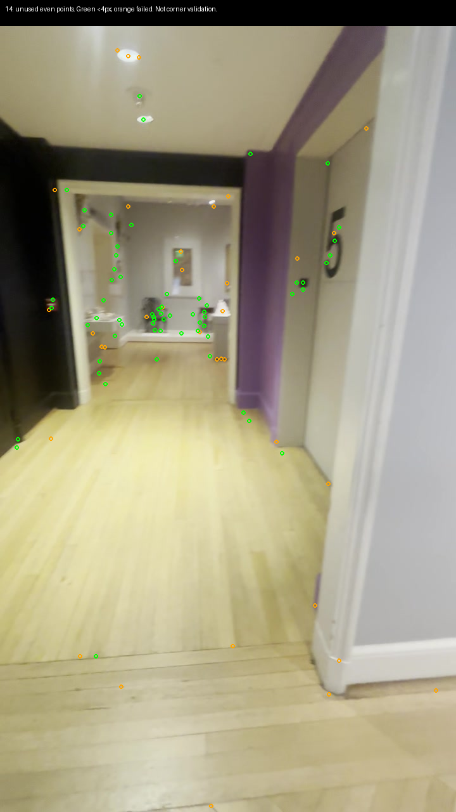
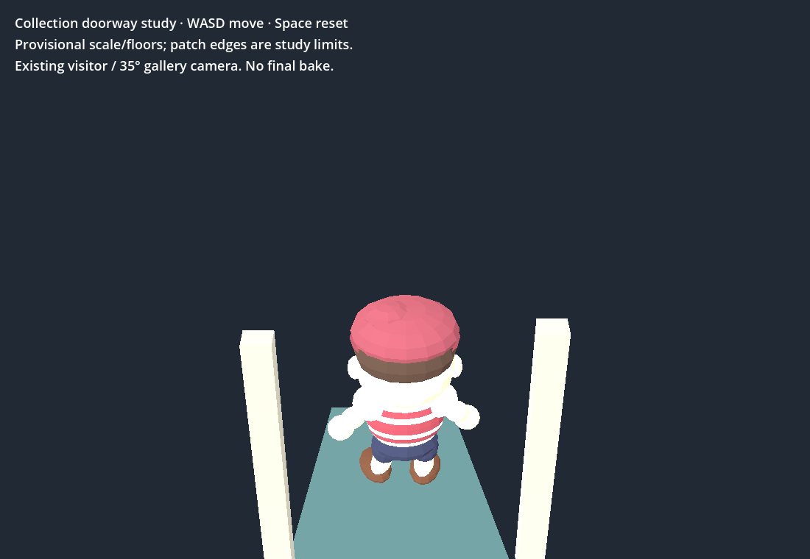
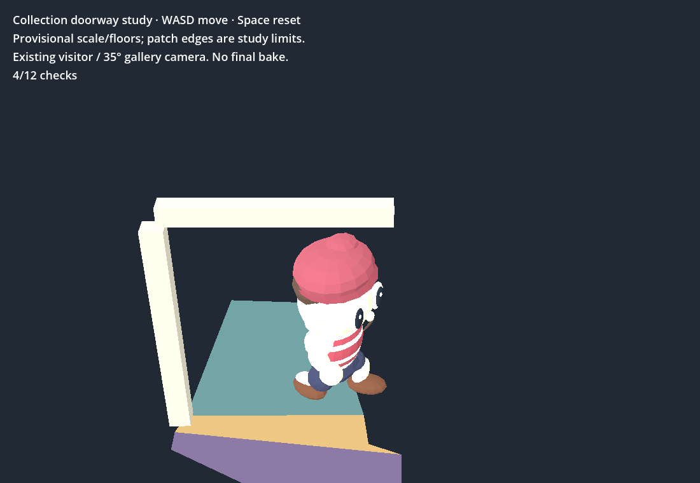
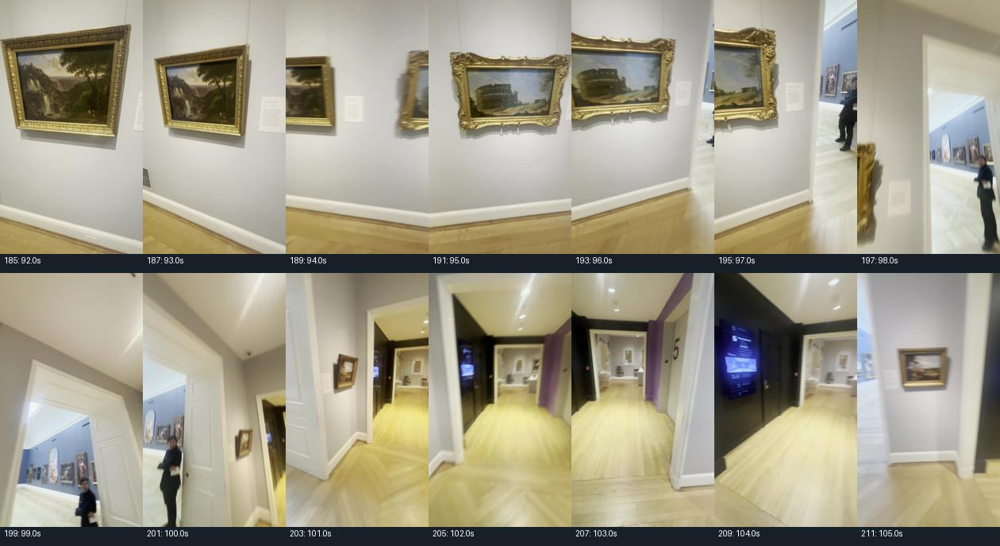
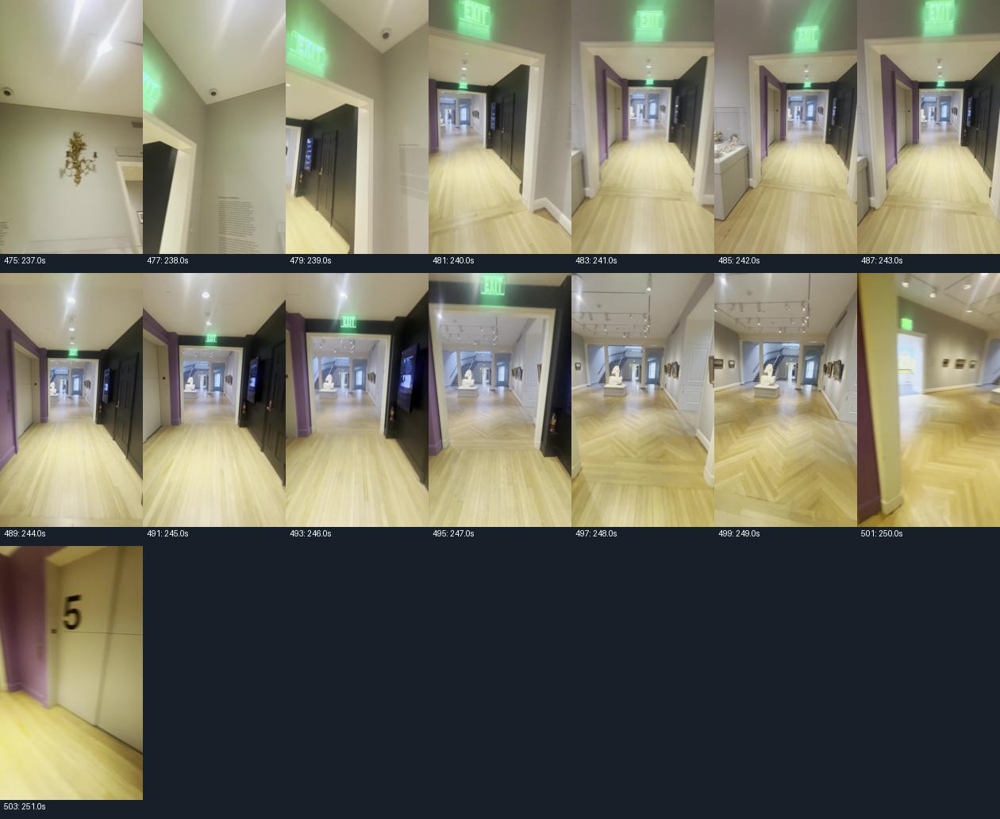

Two fresh right-casing samples localize with 36/79 odd-point pose inliers. Unused even points pass (39/63 and 67/103 below 4px). The manually reserved toe in frame 206 misses by 19.96px: rejected by the unchanged 8px gate. No new floor or collision geometry.


Measurement, support and uncertainty · Frozen picks and reserved query · Original CUDA pass and serialization failure · Final cached evaluation. Camera-report serialization fixed without repeating matching or paid work.


Exterior toe separation 1.738 provisional metres is rejected geometry, not an accepted opening width. Picking sensitivity p95 9.58cm excludes camera and scale uncertainty. Do not tune these evaluated picks.
Play the existing bounded doorway study · WASD moves; Space resets. Patch edges are study limits, not museum walls. No complete rooms or final bake.


All 24 native and RTX Chrome checks plus real keyboard round trip pass. Godot 4.7.2 / Chrome 154, 1100×760: native p95 8.80ms, browser ready 2.715s, sampled p95 16.67ms. Browser JS heap 22.46MB excludes complete process/WASM/GPU allocations. Initial llvmpipe run preserved separately.
RTX browser result · Initial software browser result · Native result · Shell: six failures · All failure names observed earlier · Repository checks pass, eight ObjectDB leak warning.


All ten cached contact-sheet observations · Frozen model, holdout and walk hashes · Provenance and hashes. $0 spent. Muse receipts remain $0.02 combined; rejected head surfaces remain incomplete. 3D Viewer untouched.
Next: use native-resolution reference to identify a sharp, unambiguous casing bevel junction and a new reserved query before measuring. Establish the same physical face and local pose support. Do not rerun the failed picks, accept exterior width as aperture, or invent connections. Whole-room geometry, scale, sculpture coverage and bake acceptance remain unresolved.